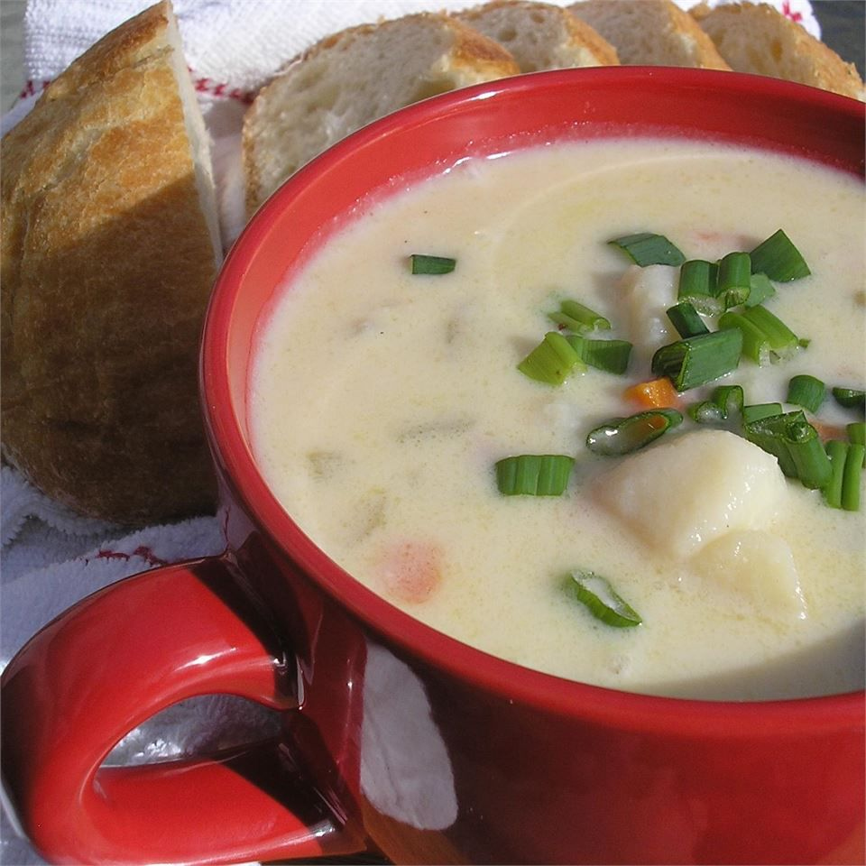

Potato Soup

Description
A simple potato soup to warm the soul.
Ingredients
- 1 Bag of Green Onions, thinly sliced
- 5 lb Bag of Red Potatoes, chopped
- 1 Carton of Half and Half
- 2 Cans of Cream of Chicken
- 2 Cans of Cream of Mushroom
- 32 oz Chicken Broth
- 1 Stick of Unsalted Butter
Directions
- Melt butter in stock pot on medium heat
- Add green onions, potatoes, salt, and pepper; fry for 10 minutes
- Add the 4 cans of soup; stir to coat all ingredients
- Add half and half, broth, and water if needed to submerge ingredients; boil for 10 minutes
- Lower heat to simmer; stir every 10 minutes for 1.5 hours
- Mash potatoes lightly and serve